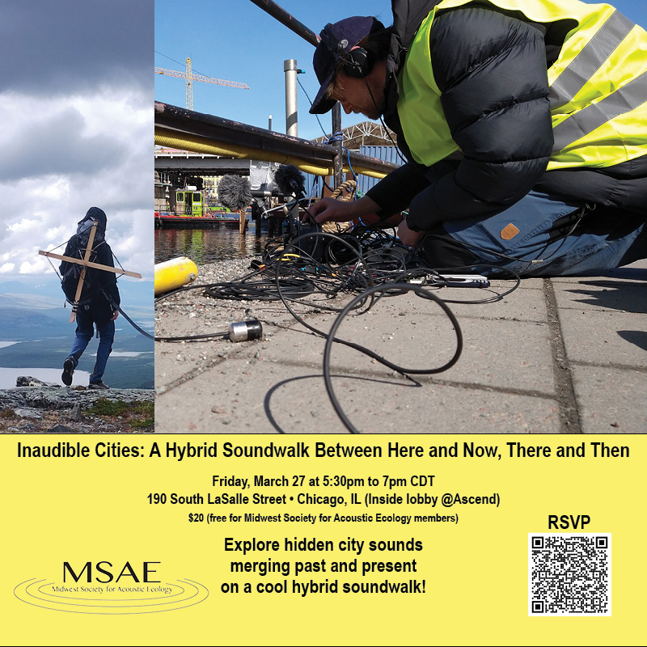

Inaudible Cities: A Hybrid Soundwalk Between Here and Now, There and Then
Join us for Inaudible Cities, an exciting in-person soundwalk that blends the present with echoes from the past. Explore the hidden sounds of the city as you wander, bridging here and now with there and then. Perfect for curious ears and adventurous souls eager to experience urban life in a whole new way. Don’t miss out on this unique auditory journey!
Inaudible Cities connects the most immediate with temporally and geographically distant soundscapes. Equipped with special audio receivers, participants will follow an itinerary that is partly defined yet largely open to spontaneous encounters. As everyday urban details—water fountains, switchboards, ventilation shafts, sewers, and cobblestones—are processed in real time, they transform into sonic manifestations of the classical elements: earth, water, air, and fire.
Using a customized set of microphones—including geophones, contact microphones, hydrophones, and electromagnetic detectors—Smolicki will gradually capture these familiar sounds, weave them together, and use them as portals to soundscapes of fragile environments documented during his fieldwork on the Pacific West Coast, in the Arctic Circle, at Canaveral National Seashore, and beyond. Participants will be equipped with receivers and headphones through which this slowly evolving composition will be streamed.
The different strategies of working with field recording, transmission, and processing of both immediate and pre-recorded soundscapes will be discussed after the walk.
25 spots will be available. Please bring wired, over-ear headphones (some will be provided).
Sharkey (Sara) Zalek is an interdisciplinary artist whose work explores personal, ancestral, and cultural trauma, resilience, and collective transformation through embodied listening and site-responsive practice. Their soundwalks, performances, and workshops invite participants to attune to place and deepen awareness of self, others, and environment.
Named an Esteemed Artist by the City of Chicago (2022) and recipient of an Elastic Arts Curatorial Grant (2020), Zalek has 15 years of somatic research and teaching experience, collaborating with organizations across Chicago and presenting work internationally.
Jacek Smolicki, PhD is an interdisciplinary artist, researcher, and educator exploring the critical and technological dimensions of listening, recording, and archiving in human and more-than-human contexts. Through soundwalks, soundscape compositions, and experimental archives, he approaches listening as a place-based practice engaging environment, memory, and media.